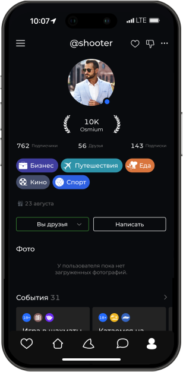
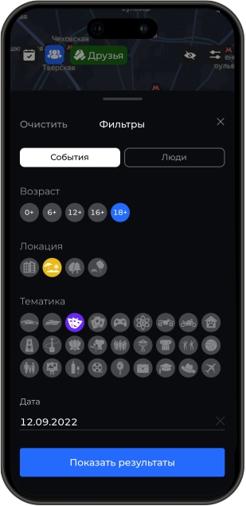

<div class="why-us_section">
    <div class="why-us container_imagane">
        <h2>Почему выбирают<br> INSOCIUM</h2>
    </div>
    <div class="icon-text_section container_imagane">
        <div class="icon-text_column">
            <ul class="icon-text_list">
                <li>Отличный способ всегда быть на связи<br> с друзьями.</li>
                <li>Приложение адаптируется под ваши<br> интересы.</li>
            </ul>
        </div>
        <div class="icon-text_column1">
            <ul class="icon-text_list">
                <li>Быстрый и удобный поиск событий.</li>
                <li>Идеальное пространство для поиска<br> новых знакомств.</li>
            </ul>
        </div>
    </div>
    <div class="image-phn container_imagane">
        <div class="image-phn_column" data-aos="fade-right" data-aos-duration="2000">
            
        </div>
        <div class="image-phn_column1" data-aos="fade-left" data-aos-duration="2000">
            
        </div>
    </div>
</div>